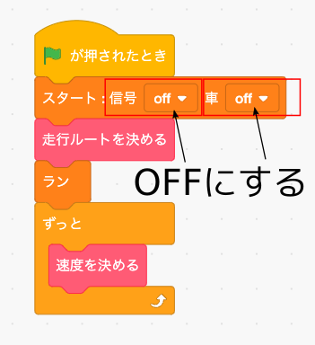
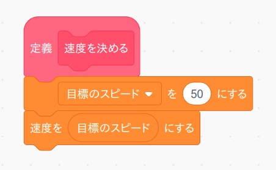

1. とりあえず進む
1
準備
Q 学習を使って自動で走行ルートが決定される様になりましたが、実行するたびにQ学習をおこなうのは時間の無駄なので、テスト用のルートをあらかじめ決めておくことにしましょう。
では「走行ルートを決める」ブロックの中身を次の図のように置き換えて下さい(元のQ学習のプログラムは消さないように！)。すると左まわりで同じ場所をぐるぐる回るようなルートになります。

「緑の旗」を押した時に実行するメイン・プログラムは次の様にします。なおテスト中に信号や他の車がいると邪魔ですので「スタート」ブロックで信号と車の設定をOFFにしています。
準備が終わったら緑の旗」ボタンを押し、ZキーとXキーで車を動かしてテストしてください。
2
とりあえず進む
ではとりあえず前進させるプログラムをつくってみましょう。 まず「変数」メニューで「目標のスピード」という変数ブロックを作ります。

次に「速度を決める」ブロックの中身を次のように置き換えます。
3
テストする
では「緑の旗」ボタンを押してテストしてみましょう。 多分とんでもないことが起きると思います。
正しく(？)動いたら「ストップ」ボタンを押してタイトル画面に戻って下さい。
※ 走行画面は動作が重いのでプログラミングはタイトル画面でした方が良いです。
チャレンジ
上の「走行ルート決める」ブロックの中身を右まわりになるように変えてみましょう。